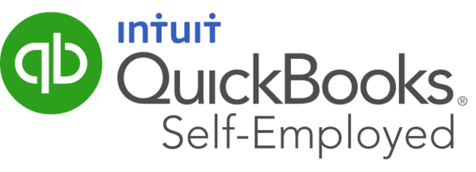
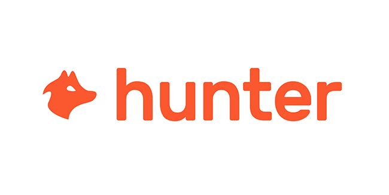
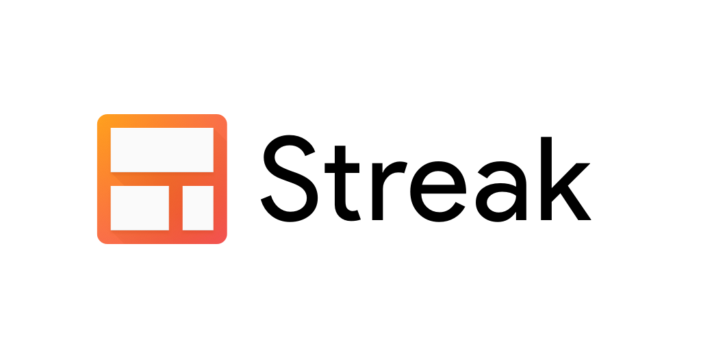
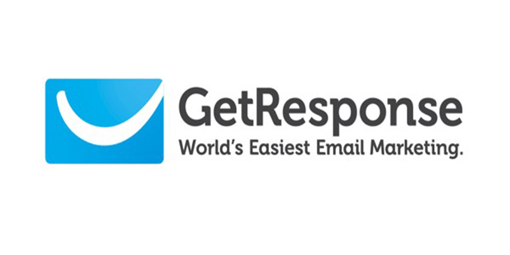

Top 10 Tools for Freelaners in 2020
Becoming a freelancer can be hard when you are first starting out. As the world of technology and software continues to advance,
it is making it possible for more and more people to work remotely with all of their income coming from online. It is expected that
over 50% of the workforce in America will be working freelance
in 2020. With more and more freelancers joining the marketplace, their have been constant innovation in the technologies that make freelancing easier.
Here is a list of the top 10 tools every freelancer should use in 2020:
1. Sighted
Sighted is 100% FREE web-based and mobile friendly online invoicing tool that simplifies the process of sending highly professional quotes, expense reports, and invoices to your clients. The platform offers a list of features that make it easy to track your revenue and creates a database of information to you to keep track of.
2. QuickBooks Self-Employed
Keep more of what you earn as a freelancer by using QuickBooks Self-Employed. This service offers tax software combined with cloud-based basic accounting benefits helping you to properly track and of your earnings and spendings to better prepare for your tax filings. On average, QuickBooks Self-Employed customers find an average tax savings of over $4,600 per year. Get 50% off your first 6 months of Quickbooks self employed.
3. Bonsai

Hello Bonsai is an all-in-one collection of tools that are catered to your needs as a freelancer. It includes features like proposals, contracts, time tracking, project tracking, expense tracking and more. Some of the things that make Bonsai different than its competitors are faster payments, easier UX which saves time, legal assets designed for you to utilize, and peace of mind knowing that their customer support department is always excited to help you with your questions. The platform is a wonderful one-stop option for freelancers looking to get the most out of their money.
4. AppSumo
Never pay full price for software again. AppSumo is a web-based platform that helps you get new softwares and online tools for up to 97% off. The platform works by having new software companies sell exclusive rights to AppSumo which gives users early (often life-time) access to the newest cutting edge tools and software. People have saved thousands using AppSumo and found a simple way to test out new tools. The platform also has a dependable review forum for each app that it is selling which helps us as freelancer decide which software is actually good to use and which are not.
5. Legal Zoom
Legal Zoom is the top trusted legal help provider in the US. Their goal is to help make legal help accessible to average Americans and small business owners. As a freelancer, Legal Zoom can help you with properly incorporating your business and making sure you are following all proper legal and tax requirements. They also will help you in creating contracts for your clients and potential employees.
6. OnlineJobs.ph

Would you like to free up your time as a freelancer to make more money in less time? Outsourcing your repetitive tasks like email management, client invoicing, reporting and other tasks can now be outsourced to highly qualified professionals in the Philippines. Because of the currency exchange, Americans can hire the same, if not better employees for a third of the labor cost in the US. Onlinejobs is a platform made to help connect you with your next Filipino hire. They have a collection of virtual assistants that can take all of your office tasks starting at just $1.67/hr.
7. Hunter
As a freelancer, selling more of your service is the only thing that will grow your business. To help find more contacts that you can sell to, Hunter makes it easy to find and verify the email addresses of the people that need your services. To use the software you can start by either searching for the domain name of the company you want to do business with. This will give you a list of all emails associated with that domain. The other powerful feature that Hunter offers is to verify emails ensuring that your emails will not bounce when sending.
8. Streak
Streak is a customer relationship management software that is built on top of Gmail. The platform integrates with your email account and helps to manage your customers, leads, and contacts. The tool helps you easily track your communications with your clients and helps to organize the contacts based on what part of the buying process they are currently in. A variety of features help you supercharge your Gmail inbox with things like view tracking, send delays, snippets, thread splitter, and more.
9. GetResponse
GetResponse is an email marketing platform that helps you automate and optimize your outbound marketing. The platform offers email marketing, marketing automation, landing pages, and sales funnel capabilities to supercharge your marketing and make more sales. The software has over 50 integrations making it a versatile tool for all of your marketing efforts.
10. Monday.com
Monday.com is one of the easiest task management tools on the market. They offer a wonderfully designed and developed software that helps you manage your work. You can manage
your client relations, projects, time tracking, billing, and much more with their easy-to-use platform. They also offer a variety of automations and integrations to help put
your business on auto-pilot.

Freelancing in 2020 is now better than ever before. With the use of these innovative tools, freelancers have the capabilities to free up their time as a freelancer and make more money in less time. Don’t make freelancing difficult by not taking advantage of all the software the market has to offer.